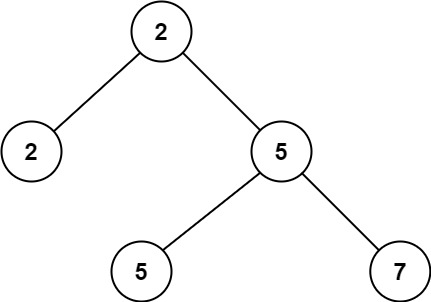
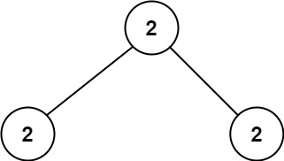

| Category | Difficulty | Likes | Dislikes |
|---|---|---|---|
| Algorithms | Easy | 1980 | 1902 |
linkedin | facebook
Given a non-empty special binary tree consisting of nodes with the non-negative value, where each node in this tree has exactly two or zero sub-node. If the node has two sub-nodes, then this node's value is the smaller value among its two sub-nodes. More formally, the property root.val = min(root.left.val, root.right.val) always holds.
Given such a binary tree, you need to output the second minimum value in the set made of all the nodes' value in the whole tree.
If no such second minimum value exists, output -1 instead.
Example 1:

Input: root = [2,2,5,null,null,5,7]
Output: 5
Explanation: The smallest value is 2, the second smallest value is 5.Example 2:

Input: root = [2,2,2]
Output: -1
Explanation: The smallest value is 2, but there isn't any second smallest value.
Constraints:
[1, 25].1 <= Node.val <= 231 - 1root.val == min(root.left.val, root.right.val) for each internal node of the tree.